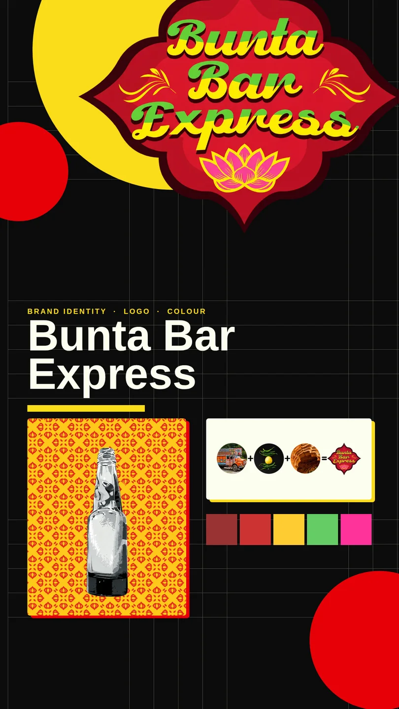
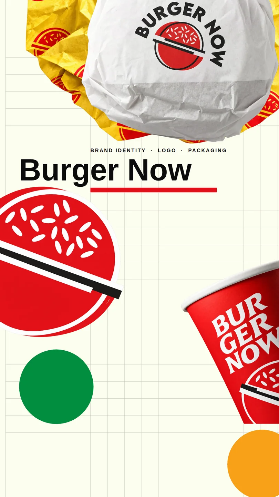
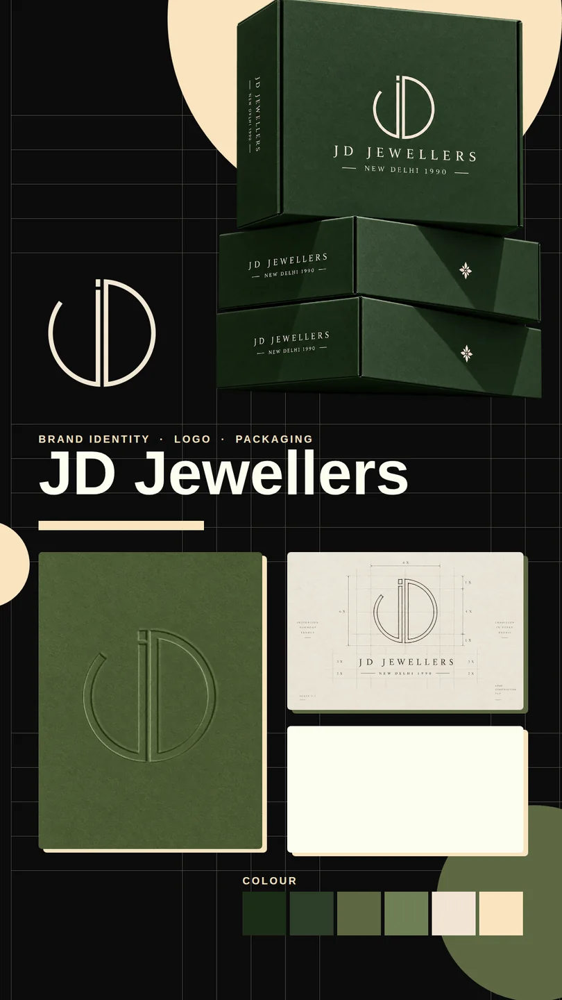

Brand identity design — Identity & design
Bunta Bar Express
Brand identity & visual system · 2021Showcase →Behance ↗

Burger Now
Brand identity, two directions · 2021Showcase →Behance ↗

JD Jewellers
Logo, lockups, reveal film · 2026Showcase →

Noidawery
Brewery & restaurant — banner · 2023
NPoster to come
CHNKRS
Sneaker reselling platform — app concept · 2022Behance ↗
Ruto
Travel app — concept · 2022Behance ↗
Search
Home-finding app — concept · 2022Behance ↗